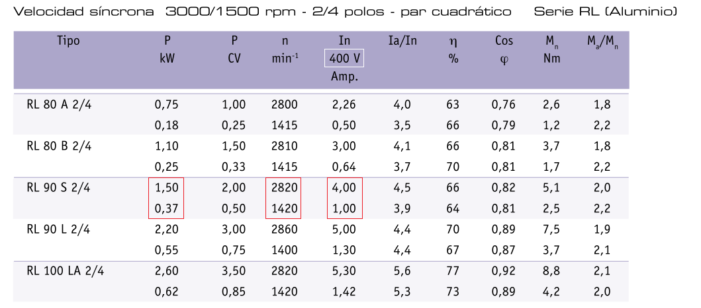
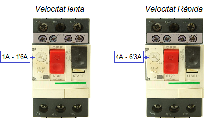

A continuació podem veure les característiques d'un motor Dahlander de parell quadràtic i nombre de pols:
- 4 pols (2 imants) amb velocitat lenta: nS=1500 r.p.m.
- 2 pols (1 imant) amb velocitat ràpida: nS=3000 r.p.m.

El primer que s'ha de destacar és que aquests motors tenen una única tensió de funcionament. En el nostre cas 400V, pent tant, s'han de connectar a un sistema trifàsic de 400V.
En segon lloc, podem veure que per cada velocitat nominal, el motor té assignada una potència mecànica i un consum de corrent. Segons el motor seleccionat:
- Velocitat lenta: n=1420 r.p.m. P=0'37KW In=1A η=66% FP=0'82
- Velocitat ràpida: n=2820r.p.m. P=1'5KW In=4A η=64% FP=0'81
Això implica que necessitem dos relés tèrmics o dos disjuntors amb diferent punt de protecció tèrmica:

A més necessitarem tres contactors amb les seguents funcions:
- ACTIVACIÓ KM1: Connexió a la xarxa dels terminals U1, V1 i W1 (VELOCITAT LENTA - connexió ESTRELA)
- ACTIVACIÓ KM2 i KM3:
- KM2: curtcircuitar els terminals U1, V1 i W1 per fer la doble estrella
- KM3·: connexió a la xarxa dels terminals U2, V2 i W2 (VELOCITAT RÀPIDA - connexió DOBLE ESTRELA YY)